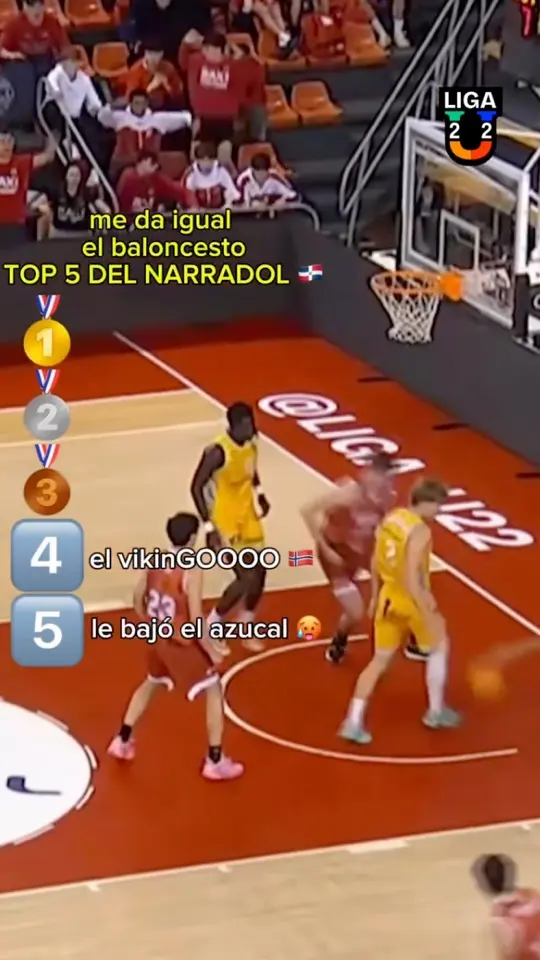
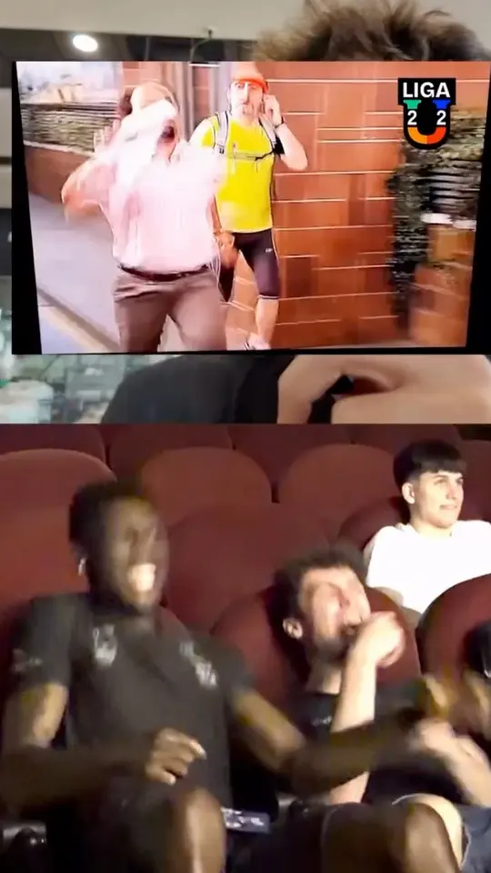
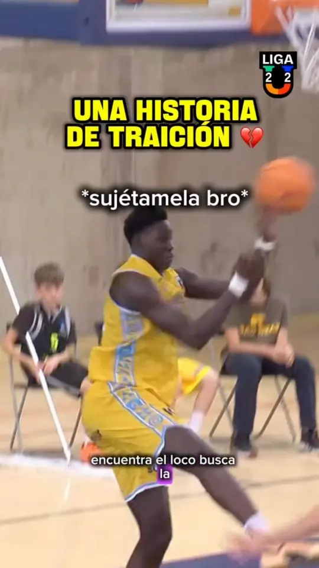

liga u — brand & communication strategy
a league nobody had heard of, a voice everybody under 22 recognizes. built from zero.
draft · hero media
key visual or 30–60s sizzle of the league's first seasons (16:9, plus a 9:16 cut for phones).
liga u is spain's under-22 basketball league, born in 2025 at the acb. the clubs of the liga endesa — real madrid, barça, valencia, unicaja — field their next generation here: the players who'll be in the euroleague in two or three seasons, while nobody knows them yet.
- 14clubs
- 28matchdays, sep → may
- u22every player
- 2025year one, from zero
season one, from zero
085m
organic views on instagram and tiktok in the league's first season. paid media: €0.
- 1 in 2 of the people who watch liga u on social are 24 or younger
- ×2.8 engagement vs. sports teams on instagram (3.69% vs. 1.3%)
- 0 → 31.7k instagram followers since jul 2025 · +19.2k on tiktok
- 205 games streamed live · youtube, dazn, teledeporte
- 1.63m tv viewers across the season · 145k for one game, barça–real madrid
- 37 nationalities on the rosters · broadcast in 8 countries
season 2025-26, to 22 may 2026 · engagement = (likes + comments + shares) / followers, median per post, benchmark rival iq 2025 · tv = average audience per minute · followers: public counters, 11 nov 2026.
every reel, one dot
521 reels since jul 2025, and 2 in 3 got more views than the account has followers. the feed doesn't preach to the converted: it finds the ones who don't know us yet.
three formats, three jobs

watch on instagram (opens in a new tab)el narradol
the top 5 of the week has always gone out mute, or over a commentary so flat you mute it yourself. we went looking for a voice instead and found el narradol: a comedy commentator with 137k followers of his own, who makes a pick-up game sound like a final. we hand him the week's plays; he calls them at full volume.
the top reel went out as a collab, so it landed in his feed and ours: his fans found a league, ours got a voice.
- 1.8mviews on instagram · no. 1 of 521 reels
- +1.73mon tiktok, across 13 episodes
- 35.4kshares of the top reel
“donde se puede ver los directos con este comentarista de 10?”
a fan under the reel: where can i watch the live games with this commentator? discovery, asking for the funnel.

watch on instagram (opens in a new tab)cámara u
the usual deal the league films the players. fans watch. cámara u the player gets the camera. fans follow.
every episode, one player films his own week: training, class, a twelve-hour bus ride, home. he stops being a prospect in a stat line and becomes the narrator of his own story — and a fan of the league becomes a fan of a person. the long episodes live on youtube; the vertical cuts feed instagram and tiktok.
then we turned the camera around: two players, ivan and osi cerdá, watching their own episode for the first time, in a cinema. the caption asked for part two in the comments, and the comments asked back.
- 269kviews on the reaction reel
- ×8.5the account's follower count
- top 21of 521 reels
“cm quiero más de esto pero ya”
cm, i want more of this. now.
season one on youtube — 12 episodes, three to start with:



watch on instagram (opens in a new tab)a betrayal, in the low post
any play is a story if you tell it like one. a random post-up, cut and captioned like a telenovela, for people who'd never sit through a u22 game. the comments didn't talk about the play. they talked about who told it.
- 71.3kviews · ×1.65 the median reel
“aumento de sueldo al cm”
give the cm a raise.
the whole feed: @liga_u22 on instagram (opens in a new tab) tiktok (opens in a new tab)
the full case — positioning, brand system and the community playbook — is shown in person or on request: ask for the deck.